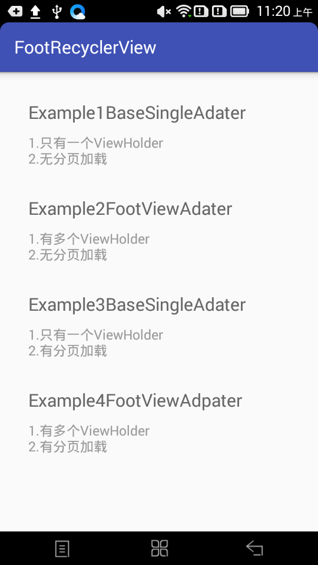
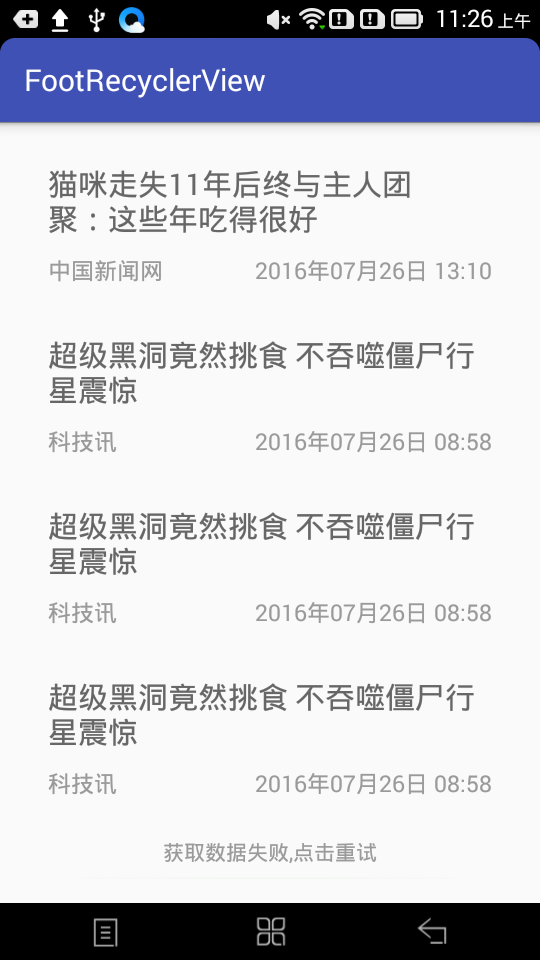
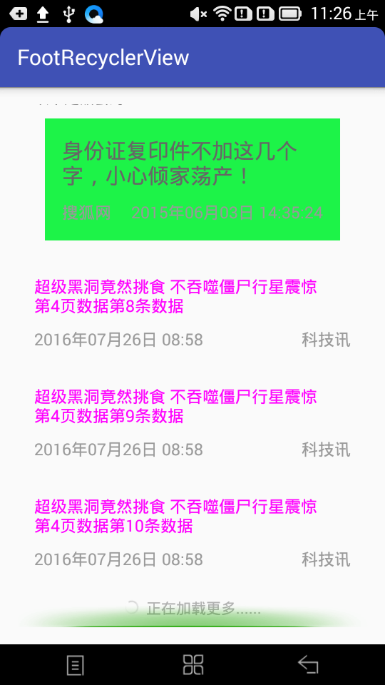

FootRecyclerView
Loaded with more FootRecyclerView
效果图
  
功能点
#1. 封装BaseViewHolder （1）得到当前对应的Ativity getAtivity() （2） 初始化view用的 getView(int viewId) getView(View view,int viewId) （3）Intent 跳转封装 goActivityByBaseType(Map map, Class> toclass) #2. 封装加载更多的FooterViewHolder （1）支持是否显示隐藏 isShow() #3.封装BaseViewAdapter （1）提供强制转换为指定ViewHolder的方法getViewHolder(RecyclerView.ViewHolder vh) （2）提供获取所有数据的方法getData() （3）提供得到指定索引对于的data的单个对象getDataT （4）修改data的某个对应下标的对象并通知刷新 （5）清空data数据clear() （6）添加数据到data addData(List datas)并通知刷新 （7）添加数据到data addDataNotNotify(List datas)不通知刷新 （8）修改数据data数据setData(List data) （9）提供需要重新的抽象方法 onNewBindViewHolder getNewItemCount getNewItemViewType #4.封装FootViewAdapter继承自BaseViewAdapter （1）支持是否显示foot setEnabledFoot(boolean enabledFoot) （2）可以开启关闭除（没有更多了）这提示不显示其他提示会显示的foot isShwoNoDataFoot(boolean enabledFoot) （3）@FootType public void setFootType(int type) 设置foot的状态 #5.封装FootRecyclerView继承自v7向下包的RecyclerView （1）上下滑动初始化init(Adapter mAdapter) 注：mAdapter非继承自FootViewAdapter则无加载更多 （2）上下加载并设置滑动监听 init(final FootViewAdapter mAdapter,final OnScrollListener onScrollListener) （3）滑动RecyclerView到某个item的位置 scrollToPosition(int position)
文档
用法
引入library root build.gradle加入
allprojects {
repositories {
jcenter()
maven { url "https://jitpack.io" }
}
}项目 build.gradle加入
compile 'com.android.support:appcompat-v7:24.2.0'
compile 'com.github.luck-fc:FootRecyclerView:tag1.0'（1）.xml加入布局
<com.luck.view.FootRecyclerView
android:id="@+id/example_footrv"
android:layout_width="match_parent"
android:layout_height="match_parent" />（2）适配器使用
1.按业务选择继承的适配器 （一）（不需要展示多种类型的View适配器可继承自BaseViewAdapter 重写onNewCreateViewHolder方法） （二）（需要展示多种类型的View适配器可继承自FootViewAdapter 重写onNewBindViewHolder getNewItemCount getNewItemViewType 方法 ) 注： T实体类
2.重新自己需要的ViewHolder 为了更加方便建议继承自BaseViewHolder(封装了 （一）Intent跳转的goActivityByBaseType方法 （二）getActivity得到当前activity的方法 （三）getView初始化View的方法)
（3）FootRecyclerView初始化
//初始化绑定
FootRecyclerView example_footrv = (FootRecyclerView) findViewById(R.id.example_footrv);
FootViewAdapter mAdpter = new FootViewAdapter//(自定义的适配器 继承自BaseSingleAdpater或FootViewAdapter)
example_footrv.init(mAdpter);//(更多重载方法请参考源码)
//需要分页 实现IFootViewAdapter接口
//重新onLoadMore();方法并调用
getData();
//全局初始化
PageUtil mPageUtil=new PageUtil();
//在下拉刷新时 或加载第一页之前调用
mPageUtil.init(mAdpter);
getData();
//在getData中 调用加载下一页，页码数会加1。
f (mPageUtil.isLoadDataFail(mAdpter)) {
return;
}
//mPageUtil.getPage() 获取当前页码数，比如是第一页用于显示刷新
if (mPageUtil.getPage() == 1) {
example_swipe.setRefreshing(true);
}
//在获取到数据后
//（1）第一获取的分页的总页码数设置总页码
if (mPageUtil.getPage() == 1) {
mPageUtil.setTotalPage(TotalPage, mAdpter);
}
//加载失败调用
mPageUtil.loadFail(mAdpter);
//加载成功后调用
mAdpter.addData(getPageData(mPageUtil.getPage()));
mPageUtil.loadSuccess(mAdpter);
其他
如有疑问，请提issue
以后
该libary将会继续被维护，相信以后会封装得更方便便捷，敬请期待！
如有更好的方式，欢迎随时Pull requests
开发者 (Developer)
- luck-fc - xiaoorchao@gmail.com
License
Copyright 2016 luck-fc.
Licensed under the Apache License, Version 2.0 (the "License");
you may not use this file except in compliance with the License.
You may obtain a copy of the License at
http://www.apache.org/licenses/LICENSE-2.0
Unless required by applicable law or agreed to in writing, software
distributed under the License is distributed on an "AS IS" BASIS,
WITHOUT WARRANTIES OR CONDITIONS OF ANY KIND, either express or implied.
See the License for the specific language governing permissions and
limitations under the License.